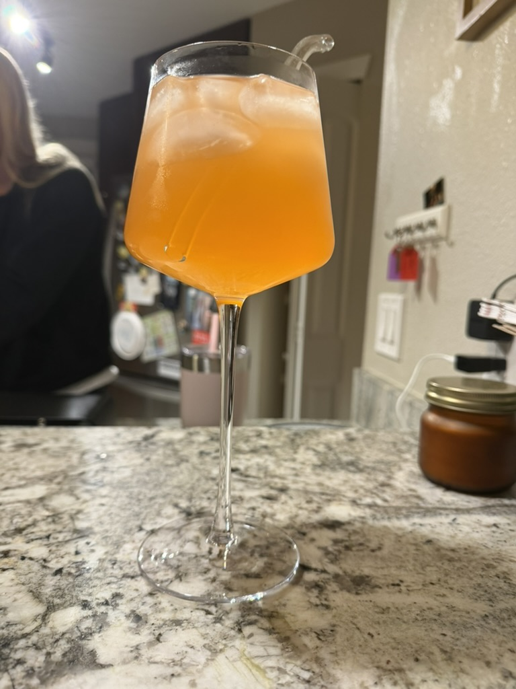

Assignment 1: Favorite Object
August 26, 2026
One of my favorite objects I have here in Boulder is my skinny wine glass. I got it at Good Will and it was only $2.99. I love it because it is so skinny and makes me feel fancy when I drink out of it. It makes drinks taste better and allows the users to appreciate the flavors more deeply. I love how skinny it is and makes me feel skinny when drinking from it. The glass can also hold a lot of beverage, I would say maybe half a wine bottle. The material it is make out of is glass, and is very thin. The glass might honestly be crystal with how thin it is. I wish I knew what brand it is to buy another one, so others can enjoy the feeling to drink from it. I hope that even though its really thin, it doesn't break easily and will last forever.
